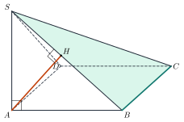
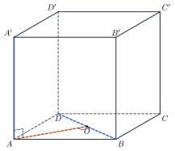
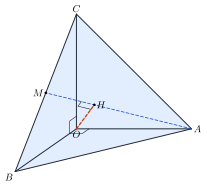

Distances in SpaceKhoảng cách trong không gian
Grade 11 · Topic: Perpendicularity in SpaceLớp 11 · Chủ đề: Quan hệ vuông góc trong không gian
1Lesson IntroductionGiới thiệu bài học
Learning goalsMục tiêu bài học
By the end of this lesson you can:
Sau bài học này, em có thể:
define and compute the distance from a point to a line and to a plane;
nêu định nghĩa và tính khoảng cách từ một điểm đến một đường thẳng, khoảng cách từ một điểm đến một mặt phẳng;
compute distances between a line and a parallel plane, and between parallel planes;
tính khoảng cách giữa đường thẳng và mặt phẳng song song, giữa hai mặt phẳng song song;
find the common perpendicular and the distance between two skew lines in simple cases;
xác định đường vuông góc chung và tính khoảng cách giữa hai đường thẳng chéo nhau trong trường hợp đơn giản;
apply distances to rooms, roofs and supports.
vận dụng khoảng cách trong phòng ở, mái che, giá đỡ.
2Mathematical VocabularyTừ vựng Toán học
distance from a point to a plane – the length \(MH\), where \(H\) is the projection of \(M\) on the plane.
khoảng cách từ một điểm đến một mặt phẳng – độ dài \(MH\), với \(H\) là hình chiếu vuông góc của \(M\) trên mặt phẳng.
common perpendicular – the line meeting two skew lines and perpendicular to both.
đường vuông góc chung – đường thẳng cắt cả hai đường thẳng chéo nhau và vuông góc với cả hai.
distance between two skew lines – the length of the common perpendicular segment.
khoảng cách giữa hai đường thẳng chéo nhau – độ dài đoạn vuông góc chung của hai đường thẳng đó.
3Useful English PhrasesCụm từ tiếng Anh thường gặp
Draw \(AH\) perpendicular to \(SB\).
Kẻ \(AH\) vuông góc với \(SB\).
\(AH\) is perpendicular to the plane \(SBC\).
\(AH\) vuông góc với mặt phẳng \((SBC)\).
The distance equals the length of the common perpendicular.
Khoảng cách bằng độ dài đoạn vuông góc chung.
One over the square of the height equals the sum of the reciprocals of the squares.
Nghịch đảo bình phương đường cao bằng tổng nghịch đảo bình phương hai cạnh góc vuông.
The two planes are parallel, so take any point.
Hai mặt phẳng song song nên lấy một điểm bất kì.
4Prerequisite ReviewÔn tập kiến thức nền
From Bài 23–25: perpendicular line and plane, perpendicular planes. Right triangle with altitude \(AH\): \(AH=\dfrac{AB\cdot AC}{BC}\), \(\dfrac1{AH^2}=\dfrac1{AB^2}+\dfrac1{AC^2}\).
Từ Bài 23–25: đường thẳng vuông góc với mặt phẳng, hai mặt phẳng vuông góc. Tam giác vuông có đường cao \(AH\): \(AH=\dfrac{AB\cdot AC}{BC}\), \(\dfrac1{AH^2}=\dfrac1{AB^2}+\dfrac1{AC^2}\).
5TheoryLý thuyết
5.1 Distance from a point to a line or a planeKhoảng cách từ một điểm đến đường thẳng, mặt phẳng
DefinitionsĐịnh nghĩa
\(d(M,a)=MH\), \(H\) the foot of the perpendicular from \(M\) to \(a\); \(d(M,(P))=MH\), \(H\) the projection of \(M\) on \((P)\). It is the shortest distance from \(M\) to points of \(a\) (of \((P)\)).
\(d(M,a)=MH\), \(H\) là chân đường vuông góc kẻ từ \(M\) đến \(a\); \(d(M,(P))=MH\), \(H\) là hình chiếu của \(M\) trên \((P)\). Đó là khoảng cách ngắn nhất từ \(M\) đến các điểm của \(a\) (của \((P)\)).
Typical construction: if \(SA\perp(ABCD)\), to get \(d(A,(SBC))\) draw \(AH\perp SB\); since \(BC\perp(SAB)\), \(AH\perp BC\), so \(AH\perp(SBC)\) and \(\dfrac1{AH^2}=\dfrac1{SA^2}+\dfrac1{AB^2}\).
Cách dựng thường gặp: nếu \(SA\perp(ABCD)\), để tính \(d(A,(SBC))\) kẻ \(AH\perp SB\); vì \(BC\perp(SAB)\) nên \(AH\perp BC\), do đó \(AH\perp(SBC)\) và \(\dfrac1{AH^2}=\dfrac1{SA^2}+\dfrac1{AB^2}\).

5.2 Parallel line and plane; parallel planesĐường thẳng song song với mặt phẳng; hai mặt phẳng song song
DefinitionsĐịnh nghĩa
If \(a\parallel(P)\): \(d(a,(P))=d(M,(P))\) for any \(M\in a\).
Nếu \(a\parallel(P)\): \(d(a,(P))=d(M,(P))\) với \(M\) bất kì thuộc \(a\).
If \((P)\parallel(Q)\): \(d((P),(Q))=d(M,(Q))\) for any \(M\in(P)\). Example: in a box, the distance between opposite faces is the edge perpendicular to them.
Nếu \((P)\parallel(Q)\): \(d((P),(Q))=d(M,(Q))\) với \(M\) bất kì thuộc \((P)\). Ví dụ: trong hình hộp chữ nhật, khoảng cách giữa hai mặt đối diện bằng cạnh vuông góc với chúng.
5.3 Distance between two skew linesKhoảng cách giữa hai đường thẳng chéo nhau
Common perpendicularĐường vuông góc chung
Two skew lines \(a\), \(b\) have a unique common perpendicular \(\Delta\), meeting them at \(M\), \(N\); \(d(a,b)=MN\), the smallest distance between a point of \(a\) and a point of \(b\).
Hai đường thẳng chéo nhau \(a\), \(b\) có duy nhất một đường vuông góc chung \(\Delta\), cắt chúng tại \(M\), \(N\); \(d(a,b)=MN\), là khoảng cách nhỏ nhất giữa một điểm của \(a\) và một điểm của \(b\).
Alternative: if \((P)\supset b\) and \((P)\parallel a\), then \(d(a,b)=d(a,(P))\).
Cách khác: nếu \((P)\supset b\) và \((P)\parallel a\) thì \(d(a,b)=d(a,(P))\).

Watch out!Lưu ý
A slanted segment is longer than the perpendicular one: \(d(A,(SBC))=AH\), not \(AB\) or \(AC\).
Đoạn xiên luôn dài hơn đoạn vuông góc: \(d(A,(SBC))=AH\), không phải \(AB\) hay \(AC\).
6Worked ExamplesVí dụ có lời giải
ExampleVí dụ 1BasicCơ bản – Easy distancesCác khoảng cách cơ bản
\(S.ABCD\): square base of side \(a\), \(SA\perp(ABCD)\), \(SA=a\). Find \(d(S,(ABCD))\), \(d(B,(SAD))\) and \(d(S,BC)\).
Hình chóp \(S.ABCD\) có đáy là hình vuông cạnh \(a\), \(SA\perp(ABCD)\), \(SA=a\). Tính \(d(S,(ABCD))\), \(d(B,(SAD))\) và \(d(S,BC)\).
Analysis: Look for perpendiculars that already exist.
Phân tích: Tìm các đường vuông góc có sẵn.
\(SA\perp(ABCD)\): \(d(S,(ABCD))=SA=a\).
\(SA\perp(ABCD)\): \(d(S,(ABCD))=SA=a\).
\(AB\perp AD\), \(AB\perp SA\): \(AB\perp(SAD)\), \(d(B,(SAD))=BA=a\).
\(AB\perp AD\), \(AB\perp SA\): \(AB\perp(SAD)\), \(d(B,(SAD))=BA=a\).
\(BC\perp(SAB)\Rightarrow SB\perp BC\): \(d(S,BC)=SB=a\sqrt2\).
\(BC\perp(SAB)\Rightarrow SB\perp BC\): \(d(S,BC)=SB=a\sqrt2\).
\(a\); \(a\); \(a\sqrt2\).
\(a\); \(a\); \(a\sqrt2\).
ExampleVí dụ 2BasicCơ bản – Distances in a cubeKhoảng cách trong hình lập phương
Cube \(ABCD.A'B'C'D'\) with edge \(a\). Find \(d(AB,(A'B'C'D'))\), \(d((ABB'A'),(DCC'D'))\) and \(d(AB,CC')\).
Hình lập phương \(ABCD.A'B'C'D'\) cạnh \(a\). Tính \(d(AB,(A'B'C'D'))\), \(d((ABB'A'),(DCC'D'))\) và \(d(AB,CC')\).
Analysis: Parallel line–plane and planes; common perpendicular for skew lines.
Phân tích: Đường song song mặt, hai mặt song song; đường vuông góc chung cho hai đường chéo nhau.
\(AB\parallel(A'B'C'D')\): distance \(AA'=a\).
\(AB\parallel(A'B'C'D')\): khoảng cách bằng \(AA'=a\).
Opposite faces: distance \(AD=a\).
Hai mặt đối diện: khoảng cách bằng \(AD=a\).
\(BC\perp AB\), \(BC\perp CC'\): \(d(AB,CC')=BC=a\).
\(BC\perp AB\), \(BC\perp CC'\): \(d(AB,CC')=BC=a\).
All three equal \(a\).
Cả ba đều bằng \(a\).
ExampleVí dụ 3IntermediateTrung bình – Point to a slanted planeTừ một điểm đến mặt phẳng xiên
\(S.ABCD\): square base of side 4, \(SA\perp(ABCD)\), \(SA=3\). Find \(d(A,(SBC))\) and \(d(D,(SBC))\).
Hình chóp \(S.ABCD\) có đáy là hình vuông cạnh 4, \(SA\perp(ABCD)\), \(SA=3\). Tính \(d(A,(SBC))\) và \(d(D,(SBC))\).
Analysis: \(AH\perp SB\); \(AD\parallel BC\Rightarrow AD\parallel(SBC)\).
Phân tích: \(AH\perp SB\); \(AD\parallel BC\Rightarrow AD\parallel(SBC)\).
\(SB=5\); \(AH=\dfrac{SA\cdot AB}{SB}=\dfrac{12}5\) (check: \(\frac19+\frac1{16}=\frac{25}{144}\)).
\(SB=5\); \(AH=\dfrac{SA\cdot AB}{SB}=\dfrac{12}5\) (kiểm tra: \(\frac19+\frac1{16}=\frac{25}{144}\)).
\(D\) lies on \(AD\parallel(SBC)\): \(d(D,(SBC))=d(A,(SBC))\).
\(D\) thuộc \(AD\parallel(SBC)\): \(d(D,(SBC))=d(A,(SBC))\).
Both equal \(\dfrac{12}5\).
Cả hai bằng \(\dfrac{12}5\).
ExampleVí dụ 4IntermediateTrung bình – Skew lines in a cubeHai đường chéo nhau trong hình lập phương
Cube \(ABCD.A'B'C'D'\) with edge \(a\). Find \(d(AA',BD)\) and \(d(BB',AC)\).
Hình lập phương \(ABCD.A'B'C'D'\) cạnh \(a\). Tính \(d(AA',BD)\) và \(d(BB',AC)\).
Analysis: \(O\) the centre of \(ABCD\).
Phân tích: Gọi \(O\) là tâm hình vuông \(ABCD\).
\(AO\perp BD\) (square), \(AO\perp AA'\) (\(AA'\perp\) base): \(d(AA',BD)=AO=\dfrac{a\sqrt2}2\).
\(AO\perp BD\) (hình vuông), \(AO\perp AA'\) (\(AA'\perp\) đáy): \(d(AA',BD)=AO=\dfrac{a\sqrt2}2\).
Likewise \(BO\) is the common perpendicular of \(BB'\), \(AC\).
Tương tự \(BO\) là đoạn vuông góc chung của \(BB'\) và \(AC\).
Both equal \(\dfrac{a\sqrt2}2\).
Cả hai bằng \(\dfrac{a\sqrt2}2\).
ExampleVí dụ 5AdvancedNâng cao – A glass shelf in a cornerTấm kính góc phòng
In a room corner \(O\) the floor and two walls are pairwise perpendicular. A triangular glass shelf is fixed at \(A\), \(B\), \(C\) on the three edges with \(OA=OB=OC=1{,}2\) m. How far is the corner from the glass?
Tại góc phòng \(O\), sàn và hai bức tường đôi một vuông góc. Một tấm kính tam giác được gắn tại \(A\), \(B\), \(C\) trên ba cạnh góc phòng với \(OA=OB=OC=1{,}2\) m. Góc phòng cách tấm kính bao xa?

Analysis: \(OA\), \(OB\), \(OC\) pairwise perpendicular: \(\dfrac1{d^2}=\dfrac1{OA^2}+\dfrac1{OB^2}+\dfrac1{OC^2}\).
Phân tích: \(OA\), \(OB\), \(OC\) đôi một vuông góc: \(\dfrac1{d^2}=\dfrac1{OA^2}+\dfrac1{OB^2}+\dfrac1{OC^2}\).
Let \(M\) be the midpoint of \(BC\), \(OH\perp AM\): \(OH\perp(ABC)\); applying the right-triangle rule twice gives the formula.
Gọi \(M\) là trung điểm \(BC\), kẻ \(OH\perp AM\): \(OH\perp(ABC)\); áp dụng hệ thức lượng trong tam giác vuông hai lần được công thức trên.
\(\dfrac1{d^2}=\dfrac3{1{,}44}\Rightarrow d=\dfrac{1{,}2}{\sqrt3}\approx0{,}69\) m.
\(\dfrac1{d^2}=\dfrac3{1{,}44}\Rightarrow d=\dfrac{1{,}2}{\sqrt3}\approx0{,}69\) m.
About 0,69 m.
Khoảng 0,69 m.
7PracticeBài tập luyện tập
A. Multiple ChoiceA. Trắc nghiệm nhiều lựa chọn
\(S.ABCD\): square base of side 4, \(SA\perp(ABCD)\), \(SA=3\). \(d(A,(SBC))=\)…
Hình chóp \(S.ABCD\) có đáy là hình vuông cạnh 4, \(SA\perp(ABCD)\), \(SA=3\). \(d(A,(SBC))\) bằng…
Answer: a. \(AH\perp SB\), \(AH=\dfrac{SA\cdot AB}{SB}\).
Đáp án a. Kẻ \(AH\perp SB\): \(AH=\dfrac{SA\cdot AB}{SB}=\dfrac{3\cdot4}{5}\).
Cube \(ABCD.A'B'C'D'\) with edge \(a\). The distance between \(A\) and \((BDD'B')\) is…
Hình lập phương \(ABCD.A'B'C'D'\) cạnh \(a\). Khoảng cách giữa \(A\) và \((BDD'B')\) bằng…
Answer: a. Distance to the diagonal plane = half the diagonal \(AC\).
Đáp án a. Khoảng cách bằng \(AO=\frac12AC\).
\(S.ABCD\): square base of side 8, \(SA\perp(ABCD)\), \(SA=6\). \(d(S,BC)=\)…
Hình chóp \(S.ABCD\) có đáy là hình vuông cạnh 8, \(SA\perp(ABCD)\), \(SA=6\). \(d(S,BC)\) bằng…
Answer: d. \(SB\perp BC\).
Đáp án d. \(BC\perp(SAB)\) nên \(SB\perp BC\): \(d=SB=10\).
B. True or FalseB. Đúng hoặc sai
The distance between two skew lines is the length of their common perpendicular segment.
Khoảng cách giữa hai đường thẳng chéo nhau bằng độ dài đoạn vuông góc chung của chúng.
Recall the definitions.
Nhớ lại các định nghĩa khoảng cách.
In a cube of edge \(a\): \(d(A,(A'BD))=\dfrac{a\sqrt3}{3}\).
Trong hình lập phương cạnh \(a\): \(d(A,(A'BD))=\dfrac{a\sqrt3}{3}\).
Find the perpendicular segment.
Tìm đoạn vuông góc tương ứng.
C. Short AnswerC. Trả lời ngắn
\(S.ABCD\): square base of side 20, \(SA\perp(ABCD)\), \(SA=15\). Find \(d(A,(SBC))\).
Hình chóp \(S.ABCD\) có đáy là hình vuông cạnh 20, \(SA\perp(ABCD)\), \(SA=15\). Tính \(d(A,(SBC))\).
Enter a number.
Nhập một số.
\(AH=\dfrac{SA\cdot AB}{SB}\).
\(SB=25\), \(AH=\dfrac{15\cdot20}{25}=12\).
A square courtyard \(ABCD\) has side 8 m; a pole \(SA=2\) m stands vertically at \(A\). A rope runs from \(S\) to the diagonal \(BD\) along the shortest path. How long is it (m)?
Một sân hình vuông \(ABCD\) cạnh 8 m; cột \(SA=2\) m dựng thẳng đứng tại \(A\). Căng dây từ \(S\) đến đường chéo \(BD\) theo đường ngắn nhất. Sợi dây dài bao nhiêu mét?
Enter a number.
Nhập một số.
Shortest to \(BD\): \(SO\), \(O\) the centre.
Đường ngắn nhất là \(SO\) (\(BD\perp(SAO)\)): \(SO=\sqrt{4+32}=6\).
A. Multiple ChoiceA. Trắc nghiệm nhiều lựa chọn
\(S.ABCD\): square base of side 12, \(SA\perp(ABCD)\), \(SA=5\). \(d(A,(SBC))=\)…
Hình chóp \(S.ABCD\) có đáy là hình vuông cạnh 12, \(SA\perp(ABCD)\), \(SA=5\). \(d(A,(SBC))\) bằng…
Answer: b. \(AH\perp SB\), \(AH=\dfrac{SA\cdot AB}{SB}\).
Đáp án b. Kẻ \(AH\perp SB\): \(AH=\dfrac{SA\cdot AB}{SB}=\dfrac{5\cdot12}{13}\).
Cube \(ABCD.A'B'C'D'\) with edge \(a\). The distance between \(A\) and \((A'BD)\) is…
Hình lập phương \(ABCD.A'B'C'D'\) cạnh \(a\). Khoảng cách giữa \(A\) và \((A'BD)\) bằng…
Answer: a. \(\frac{1}{d^2}=\frac1{a^2}+\frac1{a^2}+\frac1{a^2}\).
Đáp án a. \(\frac{1}{d^2}=\frac1{a^2}+\frac1{a^2}+\frac1{a^2}\).
\(S.ABCD\): square base of side 12, \(SA\perp(ABCD)\), \(SA=5\). \(d(S,BC)=\)…
Hình chóp \(S.ABCD\) có đáy là hình vuông cạnh 12, \(SA\perp(ABCD)\), \(SA=5\). \(d(S,BC)\) bằng…
Answer: d. \(SB\perp BC\).
Đáp án d. \(BC\perp(SAB)\) nên \(SB\perp BC\): \(d=SB=13\).
B. True or FalseB. Đúng hoặc sai
The distance from a point to a plane is the length of any segment from the point to the plane.
Khoảng cách từ một điểm đến một mặt phẳng bằng độ dài một đoạn thẳng bất kì nối điểm đó với mặt phẳng.
Recall the definitions.
Nhớ lại các định nghĩa khoảng cách.
In a cube of edge \(a\): \(d(AB,C'D')=a\).
Trong hình lập phương cạnh \(a\): \(d(AB,C'D')=a\).
Find the perpendicular segment.
Tìm đoạn vuông góc tương ứng.
C. Short AnswerC. Trả lời ngắn
\(S.ABCD\): square base of side 40, \(SA\perp(ABCD)\), \(SA=30\). Find \(d(A,(SBC))\).
Hình chóp \(S.ABCD\) có đáy là hình vuông cạnh 40, \(SA\perp(ABCD)\), \(SA=30\). Tính \(d(A,(SBC))\).
Enter a number.
Nhập một số.
\(AH=\dfrac{SA\cdot AB}{SB}\).
\(SB=50\), \(AH=\dfrac{30\cdot40}{50}=24\).
A square courtyard \(ABCD\) has side 12 m; a pole \(SA=3\) m stands vertically at \(A\). A rope runs from \(S\) to the diagonal \(BD\) along the shortest path. How long is it (m)?
Một sân hình vuông \(ABCD\) cạnh 12 m; cột \(SA=3\) m dựng thẳng đứng tại \(A\). Căng dây từ \(S\) đến đường chéo \(BD\) theo đường ngắn nhất. Sợi dây dài bao nhiêu mét?
Enter a number.
Nhập một số.
Shortest to \(BD\): \(SO\), \(O\) the centre.
Đường ngắn nhất là \(SO\) (\(BD\perp(SAO)\)): \(SO=\sqrt{9+72}=9\).
A. Multiple ChoiceA. Trắc nghiệm nhiều lựa chọn
\(S.ABCD\): square base of side 6, \(SA\perp(ABCD)\), \(SA=8\). \(d(A,(SBC))=\)…
Hình chóp \(S.ABCD\) có đáy là hình vuông cạnh 6, \(SA\perp(ABCD)\), \(SA=8\). \(d(A,(SBC))\) bằng…
Answer: a. \(AH\perp SB\), \(AH=\dfrac{SA\cdot AB}{SB}\).
Đáp án a. Kẻ \(AH\perp SB\): \(AH=\dfrac{SA\cdot AB}{SB}=\dfrac{8\cdot6}{10}\).
Cube \(ABCD.A'B'C'D'\) with edge \(a\). The distance between \(AB\) and \(C'D'\) is…
Hình lập phương \(ABCD.A'B'C'D'\) cạnh \(a\). Khoảng cách giữa \(AB\) và \(C'D'\) bằng…
Answer: b. Parallel lines; distance \(BC'\).
Đáp án b. Hai đường song song; khoảng cách \(BC'\).
\(S.ABCD\): square base of side 12, \(SA\perp(ABCD)\), \(SA=9\). \(d(S,BC)=\)…
Hình chóp \(S.ABCD\) có đáy là hình vuông cạnh 12, \(SA\perp(ABCD)\), \(SA=9\). \(d(S,BC)\) bằng…
Answer: d. \(SB\perp BC\).
Đáp án d. \(BC\perp(SAB)\) nên \(SB\perp BC\): \(d=SB=15\).
B. True or FalseB. Đúng hoặc sai
If \((P)\parallel(Q)\), \(d((P),(Q))=d(M,(Q))\) for every \(M\in(P)\).
Nếu \((P)\parallel(Q)\) thì \(d((P),(Q))=d(M,(Q))\) với mọi \(M\in(P)\).
Recall the definitions.
Nhớ lại các định nghĩa khoảng cách.
In a cube of edge \(a\): \(d(AA',BD)=\dfrac{a\sqrt2}{2}\).
Trong hình lập phương cạnh \(a\): \(d(AA',BD)=\dfrac{a\sqrt2}{2}\).
Find the perpendicular segment.
Tìm đoạn vuông góc tương ứng.
C. Short AnswerC. Trả lời ngắn
\(S.ABCD\): square base of side 15, \(SA\perp(ABCD)\), \(SA=20\). Find \(d(A,(SBC))\).
Hình chóp \(S.ABCD\) có đáy là hình vuông cạnh 15, \(SA\perp(ABCD)\), \(SA=20\). Tính \(d(A,(SBC))\).
Enter a number.
Nhập một số.
\(AH=\dfrac{SA\cdot AB}{SB}\).
\(SB=25\), \(AH=\dfrac{20\cdot15}{25}=12\).
A square courtyard \(ABCD\) has side 16 m; a pole \(SA=4\) m stands vertically at \(A\). A rope runs from \(S\) to the diagonal \(BD\) along the shortest path. How long is it (m)?
Một sân hình vuông \(ABCD\) cạnh 16 m; cột \(SA=4\) m dựng thẳng đứng tại \(A\). Căng dây từ \(S\) đến đường chéo \(BD\) theo đường ngắn nhất. Sợi dây dài bao nhiêu mét?
Enter a number.
Nhập một số.
Shortest to \(BD\): \(SO\), \(O\) the centre.
Đường ngắn nhất là \(SO\) (\(BD\perp(SAO)\)): \(SO=\sqrt{16+128}=12\).
D. Self-practice: Multiple ChoiceD. Tự luyện: trắc nghiệm
\(S.ABCD\): square base of side 6, \(SA\perp(ABCD)\), \(SA=8\). The distance from \(A\) to \((SBC)\) is…
Hình chóp \(S.ABCD\) có đáy là hình vuông cạnh 6, \(SA\perp(ABCD)\), \(SA=8\). Khoảng cách từ \(A\) đến mặt phẳng \((SBC)\) bằng…
Answer: b. \(AH\perp SB\): \(AH=\dfrac{SA\cdot AB}{SB}\).
Đáp án b. Kẻ \(AH\perp SB\); vì \(BC\perp(SAB)\) nên \(AH\perp(SBC)\): \(AH=\dfrac{SA\cdot AB}{SB}=\dfrac{8\cdot6}{10}\).
Cube \(ABCD.A'B'C'D'\) with edge \(a\). The distance from \(AB\) to \(C'D'\) is…
Hình lập phương \(ABCD.A'B'C'D'\) cạnh \(a\). Khoảng cách giữa \(AB\) và \(C'D'\) bằng…
Answer: b. Parallel lines; distance \(BC'\).
Đáp án b. Hai đường song song; khoảng cách \(BC'\).
\(S.ABCD\): square base of side 12, \(SA\perp(ABCD)\), \(SA=5\). The distance from \(S\) to the line \(BC\) is…
Hình chóp \(S.ABCD\) có đáy là hình vuông cạnh 12, \(SA\perp(ABCD)\), \(SA=5\). Khoảng cách từ \(S\) đến đường thẳng \(BC\) bằng…
Answer: b. \(BC\perp(SAB)\Rightarrow SB\perp BC\).
Đáp án b. \(BC\perp(SAB)\) nên \(SB\perp BC\): khoảng cách là \(SB=\sqrt{25+144}=13\).
\(S.ABCD\): square base of side 8, centre \(O\), \(SA\perp(ABCD)\), \(SA=2\). The distance from \(S\) to \(BD\) is…
Hình chóp \(S.ABCD\) có đáy là hình vuông cạnh 8 tâm \(O\), \(SA\perp(ABCD)\), \(SA=2\). Khoảng cách từ \(S\) đến đường thẳng \(BD\) bằng…
Answer: c. \(BD\perp(SAO)\Rightarrow SO\perp BD\).
Đáp án c. \(BD\perp AC\), \(BD\perp SA\) nên \(BD\perp SO\): khoảng cách là \(SO=\sqrt{SA^2+AO^2}=\sqrt{4+32}=6\).
Regular pyramid \(S.ABCD\): base side 12, height \(SO=8\). The distance from \(O\) to \((SCD)\) is…
Hình chóp tứ giác đều \(S.ABCD\) có cạnh đáy 12, chiều cao \(SO=8\). Khoảng cách từ \(O\) đến mặt phẳng \((SCD)\) bằng…
Answer: c. \(OH\perp SM\) (\(M\) the midpoint of \(CD\)): \(OH=\dfrac{SO\cdot OM}{SM}\).
Đáp án c. Gọi \(M\) là trung điểm \(CD\), kẻ \(OH\perp SM\): \(OH=\dfrac{SO\cdot OM}{SM}=\dfrac{8\cdot6}{10}\).
Box \(ABCD.A'B'C'D'\): \(AB=7\), \(AD=5\), \(AA'=9\). The distance between \((ABB'A')\) and \((DCC'D')\) is…
Hình hộp chữ nhật \(ABCD.A'B'C'D'\) có \(AB=7\), \(AD=5\), \(AA'=9\). Khoảng cách giữa hai mặt phẳng \((ABB'A')\) và \((DCC'D')\) bằng…
Answer: c. \(AD\) is perpendicular to both faces.
Đáp án c. \(AD\) vuông góc với cả hai mặt nên khoảng cách bằng \(AD=5\).
\(OA\), \(OB\), \(OC\) are pairwise perpendicular and \(OA=OB=OC=4\). The distance from \(O\) to \((ABC)\) is…
Cho \(OA\), \(OB\), \(OC\) đôi một vuông góc và \(OA=OB=OC=4\). Khoảng cách từ \(O\) đến mặt phẳng \((ABC)\) bằng…
Answer: c. \(\dfrac1{d^2}=\dfrac1{OA^2}+\dfrac1{OB^2}+\dfrac1{OC^2}\).
Đáp án c. \(\dfrac1{d^2}=\dfrac3{16}\Rightarrow d=\dfrac{4\sqrt3}{3}\).
\(S.ABCD\): square base of side 15, \(SA\perp(ABCD)\), \(SA=8\). The distance from \(A\) to \((SBC)\) is…
Hình chóp \(S.ABCD\) có đáy là hình vuông cạnh 15, \(SA\perp(ABCD)\), \(SA=8\). Khoảng cách từ \(A\) đến mặt phẳng \((SBC)\) bằng…
Answer: c. \(AH\perp SB\): \(AH=\dfrac{SA\cdot AB}{SB}\).
Đáp án c. Kẻ \(AH\perp SB\); vì \(BC\perp(SAB)\) nên \(AH\perp(SBC)\): \(AH=\dfrac{SA\cdot AB}{SB}=\dfrac{8\cdot15}{17}\).
D. Self-practice: Multiple ChoiceD. Tự luyện: trắc nghiệm
\(S.ABCD\): square base of side 12, \(SA\perp(ABCD)\), \(SA=9\). The distance from \(A\) to \((SBC)\) is…
Hình chóp \(S.ABCD\) có đáy là hình vuông cạnh 12, \(SA\perp(ABCD)\), \(SA=9\). Khoảng cách từ \(A\) đến mặt phẳng \((SBC)\) bằng…
Answer: b. \(AH\perp SB\): \(AH=\dfrac{SA\cdot AB}{SB}\).
Đáp án b. Kẻ \(AH\perp SB\); vì \(BC\perp(SAB)\) nên \(AH\perp(SBC)\): \(AH=\dfrac{SA\cdot AB}{SB}=\dfrac{9\cdot12}{15}\).
Cube \(ABCD.A'B'C'D'\) with edge \(a\). The distance from \(AA'\) to \(BD\) is…
Hình lập phương \(ABCD.A'B'C'D'\) cạnh \(a\). Khoảng cách giữa \(AA'\) và \(BD\) bằng…
Answer: c. \(AO\) is the common perpendicular.
Đáp án c. \(AO\) là đoạn vuông góc chung.
\(S.ABCD\): square base of side 15, \(SA\perp(ABCD)\), \(SA=8\). The distance from \(S\) to the line \(BC\) is…
Hình chóp \(S.ABCD\) có đáy là hình vuông cạnh 15, \(SA\perp(ABCD)\), \(SA=8\). Khoảng cách từ \(S\) đến đường thẳng \(BC\) bằng…
Answer: c. \(BC\perp(SAB)\Rightarrow SB\perp BC\).
Đáp án c. \(BC\perp(SAB)\) nên \(SB\perp BC\): khoảng cách là \(SB=\sqrt{64+225}=17\).
\(S.ABCD\): square base of side 4, centre \(O\), \(SA\perp(ABCD)\), \(SA=1\). The distance from \(S\) to \(BD\) is…
Hình chóp \(S.ABCD\) có đáy là hình vuông cạnh 4 tâm \(O\), \(SA\perp(ABCD)\), \(SA=1\). Khoảng cách từ \(S\) đến đường thẳng \(BD\) bằng…
Answer: b. \(BD\perp(SAO)\Rightarrow SO\perp BD\).
Đáp án b. \(BD\perp AC\), \(BD\perp SA\) nên \(BD\perp SO\): khoảng cách là \(SO=\sqrt{SA^2+AO^2}=\sqrt{1+8}=3\).
Regular pyramid \(S.ABCD\): base side 24, height \(SO=9\). The distance from \(O\) to \((SCD)\) is…
Hình chóp tứ giác đều \(S.ABCD\) có cạnh đáy 24, chiều cao \(SO=9\). Khoảng cách từ \(O\) đến mặt phẳng \((SCD)\) bằng…
Answer: b. \(OH\perp SM\) (\(M\) the midpoint of \(CD\)): \(OH=\dfrac{SO\cdot OM}{SM}\).
Đáp án b. Gọi \(M\) là trung điểm \(CD\), kẻ \(OH\perp SM\): \(OH=\dfrac{SO\cdot OM}{SM}=\dfrac{9\cdot12}{15}\).
Box \(ABCD.A'B'C'D'\): \(AB=8\), \(AD=9\), \(AA'=2\). The distance between \((ABB'A')\) and \((DCC'D')\) is…
Hình hộp chữ nhật \(ABCD.A'B'C'D'\) có \(AB=8\), \(AD=9\), \(AA'=2\). Khoảng cách giữa hai mặt phẳng \((ABB'A')\) và \((DCC'D')\) bằng…
Answer: a. \(AD\) is perpendicular to both faces.
Đáp án a. \(AD\) vuông góc với cả hai mặt nên khoảng cách bằng \(AD=9\).
\(OA\), \(OB\), \(OC\) are pairwise perpendicular and \(OA=OB=OC=3\). The distance from \(O\) to \((ABC)\) is…
Cho \(OA\), \(OB\), \(OC\) đôi một vuông góc và \(OA=OB=OC=3\). Khoảng cách từ \(O\) đến mặt phẳng \((ABC)\) bằng…
Answer: d. \(\dfrac1{d^2}=\dfrac1{OA^2}+\dfrac1{OB^2}+\dfrac1{OC^2}\).
Đáp án d. \(\dfrac1{d^2}=\dfrac3{9}\Rightarrow d=\sqrt3\).
\(S.ABCD\): square base of side 4, \(SA\perp(ABCD)\), \(SA=3\). The distance from \(A\) to \((SBC)\) is…
Hình chóp \(S.ABCD\) có đáy là hình vuông cạnh 4, \(SA\perp(ABCD)\), \(SA=3\). Khoảng cách từ \(A\) đến mặt phẳng \((SBC)\) bằng…
Answer: b. \(AH\perp SB\): \(AH=\dfrac{SA\cdot AB}{SB}\).
Đáp án b. Kẻ \(AH\perp SB\); vì \(BC\perp(SAB)\) nên \(AH\perp(SBC)\): \(AH=\dfrac{SA\cdot AB}{SB}=\dfrac{3\cdot4}{5}\).
D. Self-practice: Multiple ChoiceD. Tự luyện: trắc nghiệm
\(S.ABCD\): square base of side 3, \(SA\perp(ABCD)\), \(SA=4\). The distance from \(A\) to \((SBC)\) is…
Hình chóp \(S.ABCD\) có đáy là hình vuông cạnh 3, \(SA\perp(ABCD)\), \(SA=4\). Khoảng cách từ \(A\) đến mặt phẳng \((SBC)\) bằng…
Answer: a. \(AH\perp SB\): \(AH=\dfrac{SA\cdot AB}{SB}\).
Đáp án a. Kẻ \(AH\perp SB\); vì \(BC\perp(SAB)\) nên \(AH\perp(SBC)\): \(AH=\dfrac{SA\cdot AB}{SB}=\dfrac{4\cdot3}{5}\).
Cube \(ABCD.A'B'C'D'\) with edge \(a\). The distance from \((ABCD)\) to \((A'B'C'D')\) is…
Hình lập phương \(ABCD.A'B'C'D'\) cạnh \(a\). Khoảng cách giữa \((ABCD)\) và \((A'B'C'D')\) bằng…
Answer: b. Parallel faces at distance \(AA'\).
Đáp án b. Hai mặt song song cách nhau \(AA'\).
\(S.ABCD\): square base of side 4, \(SA\perp(ABCD)\), \(SA=3\). The distance from \(S\) to the line \(BC\) is…
Hình chóp \(S.ABCD\) có đáy là hình vuông cạnh 4, \(SA\perp(ABCD)\), \(SA=3\). Khoảng cách từ \(S\) đến đường thẳng \(BC\) bằng…
Answer: d. \(BC\perp(SAB)\Rightarrow SB\perp BC\).
Đáp án d. \(BC\perp(SAB)\) nên \(SB\perp BC\): khoảng cách là \(SB=\sqrt{9+16}=5\).
\(S.ABCD\): square base of side 12, centre \(O\), \(SA\perp(ABCD)\), \(SA=3\). The distance from \(S\) to \(BD\) is…
Hình chóp \(S.ABCD\) có đáy là hình vuông cạnh 12 tâm \(O\), \(SA\perp(ABCD)\), \(SA=3\). Khoảng cách từ \(S\) đến đường thẳng \(BD\) bằng…
Answer: b. \(BD\perp(SAO)\Rightarrow SO\perp BD\).
Đáp án b. \(BD\perp AC\), \(BD\perp SA\) nên \(BD\perp SO\): khoảng cách là \(SO=\sqrt{SA^2+AO^2}=\sqrt{9+72}=9\).
Regular pyramid \(S.ABCD\): base side 10, height \(SO=12\). The distance from \(O\) to \((SCD)\) is…
Hình chóp tứ giác đều \(S.ABCD\) có cạnh đáy 10, chiều cao \(SO=12\). Khoảng cách từ \(O\) đến mặt phẳng \((SCD)\) bằng…
Answer: c. \(OH\perp SM\) (\(M\) the midpoint of \(CD\)): \(OH=\dfrac{SO\cdot OM}{SM}\).
Đáp án c. Gọi \(M\) là trung điểm \(CD\), kẻ \(OH\perp SM\): \(OH=\dfrac{SO\cdot OM}{SM}=\dfrac{12\cdot5}{13}\).
Box \(ABCD.A'B'C'D'\): \(AB=6\), \(AD=3\), \(AA'=5\). The distance between \((ABB'A')\) and \((DCC'D')\) is…
Hình hộp chữ nhật \(ABCD.A'B'C'D'\) có \(AB=6\), \(AD=3\), \(AA'=5\). Khoảng cách giữa hai mặt phẳng \((ABB'A')\) và \((DCC'D')\) bằng…
Answer: b. \(AD\) is perpendicular to both faces.
Đáp án b. \(AD\) vuông góc với cả hai mặt nên khoảng cách bằng \(AD=3\).
\(OA\), \(OB\), \(OC\) are pairwise perpendicular and \(OA=OB=OC=1\). The distance from \(O\) to \((ABC)\) is…
Cho \(OA\), \(OB\), \(OC\) đôi một vuông góc và \(OA=OB=OC=1\). Khoảng cách từ \(O\) đến mặt phẳng \((ABC)\) bằng…
Answer: b. \(\dfrac1{d^2}=\dfrac1{OA^2}+\dfrac1{OB^2}+\dfrac1{OC^2}\).
Đáp án b. \(\dfrac1{d^2}=\dfrac3{1}\Rightarrow d=\dfrac{\sqrt3}{3}\).
\(S.ABCD\): square base of side 5, \(SA\perp(ABCD)\), \(SA=12\). The distance from \(A\) to \((SBC)\) is…
Hình chóp \(S.ABCD\) có đáy là hình vuông cạnh 5, \(SA\perp(ABCD)\), \(SA=12\). Khoảng cách từ \(A\) đến mặt phẳng \((SBC)\) bằng…
Answer: d. \(AH\perp SB\): \(AH=\dfrac{SA\cdot AB}{SB}\).
Đáp án d. Kẻ \(AH\perp SB\); vì \(BC\perp(SAB)\) nên \(AH\perp(SBC)\): \(AH=\dfrac{SA\cdot AB}{SB}=\dfrac{12\cdot5}{13}\).
8Common MistakesLỗi thường gặp
Taking a slanted segment as the distance. \(d(A,(SBC))\) is not \(AB\): first construct the perpendicular \(AH\).
Lấy đoạn xiên làm khoảng cách. \(d(A,(SBC))\) không phải \(AB\): phải dựng đoạn vuông góc \(AH\) trước.
Drawing \(AH\perp SC\) instead of \(AH\perp SB\). \(H\) must lie on the line where \((SAB)\) (which is perpendicular to \((SBC)\)) meets \((SBC)\): that line is \(SB\).
Kẻ \(AH\perp SC\) thay vì \(AH\perp SB\). \(H\) phải nằm trên giao tuyến của \((SAB)\) (mặt vuông góc với \((SBC)\)) với \((SBC)\), tức là \(SB\).
Forgetting to use parallelism. \(d(D,(SBC))=d(A,(SBC))\) since \(AD\parallel(SBC)\).
Quên dùng quan hệ song song. \(d(D,(SBC))=d(A,(SBC))\) vì \(AD\parallel(SBC)\).
For skew lines, using a segment perpendicular to only one line. The common perpendicular is perpendicular to both.
Với hai đường chéo nhau, dùng đoạn chỉ vuông góc với một đường. Đoạn vuông góc chung phải vuông góc với cả hai.
9Lesson SummaryTổng kết
\(d(M,(P))=MH\), \(H\) the projection; \(SA\perp\) base: \(\dfrac1{AH^2}=\dfrac1{SA^2}+\dfrac1{AB^2}\).
\(d(M,(P))=MH\), \(H\) là hình chiếu; \(SA\perp\) đáy: \(\dfrac1{AH^2}=\dfrac1{SA^2}+\dfrac1{AB^2}\).
Parallel objects: take any convenient point.
Các đối tượng song song: lấy một điểm thuận tiện bất kì.
Skew lines: common perpendicular, or a plane through one line parallel to the other.
Hai đường chéo nhau: đoạn vuông góc chung, hoặc mặt phẳng chứa đường này và song song với đường kia.
Key words: distance, projection, common perpendicular, skew lines.
Từ cần nhớ: distance, projection, common perpendicular, skew lines.